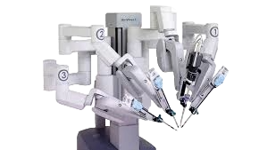

Herbruikbaarheid robots
Millieutoepassing van robots
Voor en nadelen Robotica
Contact
Medische robots
Buiten de industrie zijn robots tegenwoordig ook niet in de medische wereld niet te missen.
Robots worden het vaakst betrokken bij lastige operaties (operatierobots) waar veel precisie voor nodig is.
Robots kunnen deze taken veel nauwkeuriger doen dan mensen en verkleind daardoor het risico op fouten.
Deze operatie robots zijn niet het soort robots zoals in de industrie, deze robots worden echter live bestuurd door de mens,
de chirurg zit dan achter een soort computer en bestuurd dan meerdere robotarmen die allemaal verschillende medische instrumenten
vast hebben om op die manier heel precies kleine handelingen kan maken. Zelfs de beste chirurg is niet even nauwkeurig als een robot.
 Robots komen sinds kort ook veel voor in de medische wereld hierbij kan je denken aan robots zoals Zora ‘Zorg, Ouderen, Revalidatie en Animatie’.
Zora is een robot die de lichaamsbouw heeft van een mens. Deze robot wordt vaak ingezet in verzorgingstehuizen voor ouderen om ze gezelschap te houden.
Zora kan bijvoorbeeld: Bingo, liedjes zingen, verhaaltjes vertellen en heeft gezicht/foto herkenning.
Robots komen sinds kort ook veel voor in de medische wereld hierbij kan je denken aan robots zoals Zora ‘Zorg, Ouderen, Revalidatie en Animatie’.
Zora is een robot die de lichaamsbouw heeft van een mens. Deze robot wordt vaak ingezet in verzorgingstehuizen voor ouderen om ze gezelschap te houden.
Zora kan bijvoorbeeld: Bingo, liedjes zingen, verhaaltjes vertellen en heeft gezicht/foto herkenning.